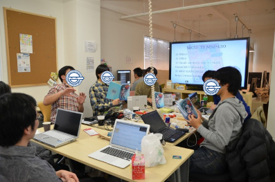
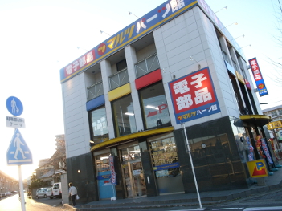
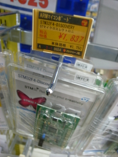
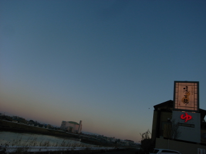
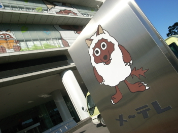

We had Functional MCU programming training using mbedβ as “Metasepi team meeting #9”.
Do you know Internet of Things (IoT)? People advocating IoT would like to let non-descriptive things collect data on the location or behave more intelligentially, with injecting MCU into the things such like basketball. Gartner Says “the Internet of Things Installed Base Will Grow to 26 Billion Units By 2020”, then IoT is a big market while dollar amount may be inaccurate. However, rich OS such like Linux can’t run on IoT device, because the device should be very inexpensive. Furthermore, it talks Bluetooth and Wifi to connect the internet. We need to get less runtime errors on the complex device, because it’s hard to debug after published. I think we satisfy both of less man-hours and less runtime errors, as my research that design it using strongly typed language. Then, how about launch “Functional language + MCU programming” community, while Ajhc has unknown to solve the claim. To build Functional MCU programming training course for the community, we held beta version the course at Nagoya in where many functional programmer live. There is a plan to hold the courses continuously.
By the way, There is following choice to be statically typed functional programming language can do MCU programming. This year, we would like to survey each languages, and decide to employ which language after Arafura iteration.
Ajhc is the result of our own research. ATS is under survey on the user group launched the other day. For Rust, @pirapira has a idea reading RSS of Rust ’n Stuffs, because developing speed of the Rust is very fast. Thank’s a lot! Anyway, we have three choices today, while Ajhc is only hope when Ajhc project was started How shriek of joy!
We took on the basecamp NAGOYA for this meeting. The stuff blog posts about this meeting. Also, usage fee on this meeting is paid by IT Planning, Inc. So happy and thank’s!
This travel guide may be useful, because we will have many meeting at Nagoya.
Highway express bus is inexpensive method to trip Nagoya from Tokyo. Using 夜行バス比較なび, you can find ticket 2000 yen per one way. However, there are no inexpensive ticket during the year change period.
I always find hotel on じゃらんnet. In Nagoya, カプセルイン名古屋 is lowest price as 2500 yen per night. Quality of the hotel is …. so not bad. Note capsule room in the hotel has no power resource.
After exiting highway express bus, I would like to take a bath. 太閤天然温泉 湯吉郎 open since 6.00 a.m. on Saturday and Sunday, however the hot spring is far away from Nagoya station. Note you should have your own towel, because there are no free towels in the hot spring.
There are many Starbucks Coffee shops around Sakae. These shop almost have power resource, and open until 22:30 p.m. You will have no trouble to find hack place.
There is マルツパーツ館 名古屋小田井店 as only electronic components store at Nagoya. 1 Many single-board computers are on ground floor. I found STM32F4DISCOVERY and STM32VLDISCOVERY. STM32F3DISCOVERY as first target board on Ajhc project may be not popular…
    
blog comments powered by